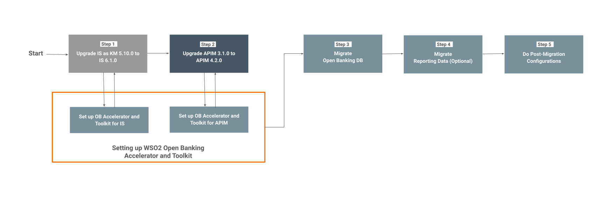

Upgrading WSO2 Open Banking from 2.0.0 to 3.0.0¶
This documentation guides you on how to upgrade your WSO2 Open Banking 2.0.0 for the AU setup to WSO2 Open Banking 3.0.0 (Accelerator Model) CDS Toolkit 1.0.0 with WSO2 API Manager 4.2.0 and WSO2 Identity Server 6.1.0 as the base packs.
Overview¶
WSO2 Open Banking solution runs on top of WSO2 Identity Server and WSO2 API Manager which are referred to as base products.
Given below is the product compatibility matrix for the WSO2 Open Banking solution. This matrix outlines the compatibility between the versions of WSO2 Open Banking solutions involved in this migration and the latest version of the base products they support.
| WSO2 Open Banking Version | Supported WSO2 Identity Server Version | Supported WSO2 API Manager Version |
|---|---|---|
| 2.0.0 | 5.10.0 | 3.1.0 |
| 3.0.0 | 6.1.0 (Latest) | 4.2.0 (Latest) |
Prerequisites¶
We assume that you already have an existing WSO2 Open Banking 2.0.0 solution for the AU with some sample data populated in the databases. This setup will be referred to as the pre-migration setup in this documentation.
Important:
In order to upgrade your existing Open Banking solution to the latest version, you need to upgrade the base products (WSO2 Identity Server and WSO2 API Manager) to the latest supported version as well.
In addition to the base product migration, you need to configure WSO2 Identity Server as Key Manager. The Key Manager handles all clients, security, and access token-related operations. So you need to configure WSO2 Identity Server as Key Manager in each WSO2 API Manager migration.
The following link explains the flow of upgrading the WSO2 Open Banking solution:

Given below are the steps you need to follow to upgrade your WSO2 Open Banking 2.0.0 for the AU setup to WSO2 Open Banking 3.0.0 - CDS Toolkit 1.0.0:
- Prepare for Migration
- Upgrade IS as KM 5.10.0 to IS as KM 6.1.0
- Upgrade WSO2 API Manager 3.1.0 to WSO2 API Manager 4.2.0
- Migrate Open Banking Data
- Migrate Reporting Data (Optional)
- Post-Migration Configurations
1. Prepare for Migration¶
In the following section, you will be setting up Open Banking Accelerator and CDS Toolkit for Identity Server and API Manager.
-
Download WSO2 Identity Server 6.1.0 from here and extract the folder. This extracted folder will be referred to as
<IS_HOME>in this document. -
Download WSO2 API Manager 4.2.0 from here and extract the folder. This extracted folder will be referred to as
<APIM_HOME>in this document. -
Get WSO2 Open Banking Accelerator 3.0.0 provided by the WSO2 team.
-
Extract the WSO2 Open Banking Accelerator zip files. Get the following accelerators and extract them.
wso2-obiam-accelerator-3.0.0wso2-obam-accelerator-3.0.0
-
Get WSO2 Open Banking CDS Toolkit 1.0.0 provided by the WSO2 team. Get the following toolkits and extract them.
wso2-obiam-toolkit-cds-1.0.0wso2-obam-toolkit-cds-1.0.0
-
This document uses the following placeholders to refer to the following products:
| Product | Placeholder |
|---|---|
| WSO2 Identity Server 6.1.0 | <IS_HOME> |
| WSO2 API Manager 4.2.0 | <APIM_HOME> |
| WSO2 Open Banking Identity Server Accelerator 3.0.0 | <OB_IS_ACCELERATOR_HOME> |
| WSO2 Open Banking API Manager Accelerator 3.0.0 | <OB_APIM_ACCELERATOR_HOME> |
| WSO2 Open Banking Identity Server CDS Toolkit 1.0.0 | <OB_IS_TOOLKIT_HOME> |
| WSO2 Open Banking API Manager CDS Toolkit 1.0.0 | <OB_APIM_TOOLKIT_HOME> |
-
Follow the Getting WSO2 Updates documentation and update the base products, accelerators, and toolkits using relevant scripts.
-
Run the
merge.shscript in<APIM_HOME>/<OB_APIM_ACCELERATOR_HOME>/binand<IS_HOME>/<OB_IS_ACCELERATOR_HOME>/binrespectively to copy the Open Banking artifacts into the base product packs.
./merge.sh
- Run the
merge.shscript in<APIM_HOME>/<OB_APIM_TOOLKIT_HOME>/binand<IS_HOME>/<OB_IS_TOOLKIT_HOME>/binrespectively:
./merge.sh
-
Add the relevant modifications to the
wso2is-6.0.0-deployment-cds.tomlfile in the<IS_HOME>/<OB_IS_TOOLKIT_HOME>/repository/resourcesdirectory. -
Rename
wso2is-6.0.0-deployment-cds.tomltodeployment.toml. -
Copy the
deployment.tomlfile to the<IS_HOME>/repository/confdirectory to replace the existing file. -
Open the
<IS_HOME>/repository/conf/deployment.tomlfile, and configure the hostnames and databases related properties accordingly.- When configuring database related properties, ensure that the datasource are pointing to the existing databases.
-
Add the relevant modifications to the
wso2am-4.2.0-deployment-cds.tomlfile in the<APIM_HOME>/<OB_APIM_TOOLKIT_HOME>/repository/resourcesdirectory. -
Rename
wso2am-4.2.0-deployment-cds.tomltodeployment.toml. -
Copy the
deployment.tomlfile to the<APIM_HOME>/repository/confdirectory to replace the existing file. -
Open the
<APIM_HOME>/repository/conf/deployment.tomlfile, and configure the hostnames and databases related properties accordingly.- When configuring database related properties, ensure that the datasource are pointing to the existing databases.
-
Add the following configurations needed for Identity Server 6.1.0 and API Manager 4.2.0.
-
Add the following configuration in Identity Server 6.1.0
deployment.tomlfile.[application_mgt] enable_role_validation = true -
Add the following configuration in the
deployment.tomlfile of API Manager 4.2.0 after the configurations done under[open_banking.dcr]. Note that the version must be specified asv3for API Manager 4.2.0.[open_banking.dcr.apim_rest_endpoints] app_creation = "api/am/devportal/v3/applications" key_generation = "api/am/devportal/v3/applications/application-id/map-keys" api_retrieve = "api/am/devportal/v3/apis" api_subscribe = "api/am/devportal/v3/subscriptions/multiple" retrieve_subscribe="api/am/devportal/v3/subscriptions”
-
-
Now all the Open Banking related artifacts and configurations are included in the base packs.
2. Migrating WSO2 IS as Key Manager from Identity Server 5.10.0 to 6.1.0¶
-
Get the Upgrading WSO2 IS as Key Manager to 6.0.0 documentation provided by the WSO2 team. This will instruct you to upgrade your IS as Key Manager 5.10.0 to IS 6.1.0. Take note of the essential points provided below while following the instructions in the documentation.
Important
Please note that the information contained in the above-mentioned documentation is also applicable for WSO2 Identity Server 6.1.0.
-
Follow Step A: Upgrade IS as Key Manager 5.10.0 to IS 6.0.0 in the above-mentioned documentation. Follow all the steps and make sure to perform the necessary steps mentioned below:
Note
Refer to the Migrating to 6.1.0 documentation when following the step 5 under Step 1: Migrate the IS as KM configurations.
-
When following Step 2: Migrate the IS as KM Resources, download the WSO2 IS Connector for API Manager 4.2.0 from here. Extract the folder (
wso2is-extensions-1.6.8.zip) and get the relevant JAR files and WAR file. -
When following Step 3: Migrate the IS as KM Components, use the
wso2is-migration-1.1.163.zipfolder as the identity component migration resource. -
Following the Step A: Upgrade IS as Key Manager 5.10.0 to IS 6.0.0 in the above-mentioned documentation with the above instructions, concludes the WSO2 IS as Key Manager from Identity Server 5.10.0 to 6.1.0 migration.
3. Migrating WSO2 API Manager from 3.1.0 to 4.2.0¶
-
Get the Upgrading API Manager from 3.1.0 to 4.2.0 documentation provided by the WSO2 team. This will instruct you to upgrade your API-M environment from 3.1.0 to 4.2.0. Take note of the essential points provided below while following the instructions in the documentation.
-
When following Step 1: Migrate the API Manager Configurations, use the DB scripts (
db-scripts/upgrading-from-310-to-420) provided by the WSO2 team. -
Skip the guidelines under Step 3: Migrate the Identity Components as you have already done this in Step 3 of Step A: Upgrade IS as Key Manager 5.10.0 to IS 6.0.0.
-
When following Step 4: Migrate the API Manager Components, use the provided API Manager Migration resources (
wso2am-migration-4.2.0.54.zip). -
Before starting the API Manager 4.2.0 server for the first time in Step 6 under Step 6: Restart the WSO2 API Manager 4.2.0 Server, make sure you have already started WSO2 Identity Server 6.1.0.
-
Following the above-mentioned documentation with the above instructions, concludes the WSO2 API Manager migration.
4. Migrating Open Banking Data¶
In this step, you will transfer your Open Banking data from your existing Open Banking 2.0.0 platform to the new WSO2 Open Banking 3.0.0 platform. This process includes moving important information such as customer accounts, transactions, and permissions.
Prerequisites¶
Make sure the following:
-
In your Open Banking 2.0.0 database, check the column size of the following:
Database Table Column Data type Size openbank_apimgtdbSP_METADATAVALUEVARCHAR4096 -
If the column size is less than 4096, execute the following command against the
SP_METADATAtable:ALTER TABLE SP_METADATA MODIFY VALUE VARCHAR(4096);
-
Note:
Please read the following section before proceeding with the migration:
The
SPMigratormigrates the Dynamic Client Registration related data.``` - name: "SPMigrator" spec: "AU" order: 3 parameters: schema: "ob" ```The default
common-auth-script.js(the adaptive authentication script of service provider applications) that was provided in Open Banking 2.0.0 is not supported in Open Banking 3.0.0. Therefore, the migration tool is configured to automatically update thecommon-auth-scriptfile of all service provider apps to the format which is supported in Open Banking 3.0.0.
- This default script supported in Open Banking 3.0.0 is available in the
common-auth-script.jsfile placed at theopenbanking-migration-resources/common-auth-scripts/AUdirectory.- Make sure to change the content of the file appropriately if you have used a customized adaptive authentication script for all the service provider applications in your Open Banking 2.0.0 setup and that logic will not be supported directly in Open Banking 3.0.0.
- If you can assure that the customized adaptive authentication logic used in Open Banking 2.0.0 is supported in Open Banking 3.0.0 without any modifications, you can skip this step during the migration by setting the
commonAuthScriptUpdateEnableparameter under the relevant spec version of theSPMigratortofalseinmigration-config.yaml. Otherwise, it should betrue.- name: "SPMigrator" spec: "AU" order: 3 parameters: schema: "ob" commonAuthScriptUpdateEnable: "false"- If you have configured different adaptive authentication logics for service provider applications, the migration-tool does not support the automated update.
- In this case also, the
commonAuthScriptUpdateEnableparameter under the relevant spec version of the SPMigrator should be set to false inmigration-config.yamlbefore starting the OB-migration process as shown above.Note:
- If any update is required, the adaptive authentication logic of each service provider should be updated manually based on your customizations via the carbon console once the entire migration process is concluded.
If Business Nominated Representative feature was enabled in OB2, Uncomment and enable the following migrator,
- If Disclosure Options Management feature was enabled in OB2, Uncomment and enable the following migrator,name: "BNRMigrator" spec: "AU" order: 1 parameters: schema: "ob"- If Secondary User feature was enabled in OB2, Uncomment and enable the following migrator.name: "DOMSMigrator" spec: "AU" order: 1 parameters: schema: "ob"name: "SecondaryUsersMigrator" spec: "AU" order: 1 parameters: schema: "ob" ceasing_secondary_user_sharing_enabled: "false”Note:
- If the
Ceasing Secondary User Sharingfeature was enabled in the OB2, make theceasing_secondary_user_sharing_enabledfield totrue. Otherwise, need to set it tofalse.name: "ConsentMigrator" spec: "AU" order: 1 parameters: schema: "ob" token_expiry_time: "84600" expired_custom_status: "Expired" consent_history_enabled: "true" ```- To migrate consent history data, enable the "consent_history_enabled" parameter.Before you begin:
Back up all the databases before performing the migration.
-
To create the required database tables:
- Run the relevant SQL script in the
<IS_HOME>/dbscripts/open-banking/consentdirectory against theopenbank_openbankingdbdatabase. - Create
OB_ACCOUNT_METADATAtable by running the SQL script in the<IS_HOME>/dbscripts/open-banking/account-metadatadirectory against theopenbank_openbankingdbdatabase. - Create
OB_CONSENT_HISTORYtable by running the SQL script in the<IS_HOME>/dbscripts/open-banking/consent-historydirectory against theopenbank_openbankingdbdatabase.
- Run the relevant SQL script in the
-
Open the
<AM_HOME>/repository/conf/deployment.tomlfile and set the following config to false before executing the OB migration tool.[open_banking_cds.metrics.aggregation_job] enabled = false -
Get the WSO2 Open Banking Migration Client Tool v1.0.2 (
wso2-openbanking-migration-1.0.2.zip) provided by the WSO2 team. -
Copy the
wso2-openbanking-migration-1.0.2/openbanking-migration-resourcesdirectory to<IS_HOME>. -
Copy the
wso2-openbanking-migration-1.0.2/dropins/com.wso2.openbanking.migration-1.0.2.jarfile to<IS_HOME>/repository/components/dropins. -
Open the
wso2-openbanking-migration-1.0.2/openbanking-migration-resources/migration-config.yamlfile and set themigrationEnableproperty totrue. -
Start the Identity Server with the following command:
sh wso2server.sh -DobMigrationSpec=AU -
Stop the server.
Warning
If a failure occurred during the migration process, delete all the migrated data from the tables that were generated during migration.
-
Remove the
<IS_HOME>/repository/components/dropins/com.wso2.openbanking.migration-1.0.2.jarfile. -
Remove the
<IS_HOME>/openbanking-migration-resourcesdirectory. -
Open the
<AM_HOME>/repository/conf/deployment.tomlfile and set the following config to true before executing the OB migration tool.[open_banking_cds.metrics.aggregation_job] enabled = true -
Start the Identity Server and API Manager servers.
5. Migrating Reporting Data¶
In this step, you will transfer data from your existing reporting system to the new WSO2 Open Banking platform. This will involve moving data related to reports, dashboards, and visualizations.
Note:
Follow this step only if you are using WSO2 Open Banking Business Intelligence with your existing WSO2 Open Banking 2.0.0 setup.
- Stop the WSO2 Open Banking Business Intelligence 2.0.0 server if it is running.
- Download and install the WSO2 Streaming Integrator 4.2.0 distribution from here.
- Backup your
openbank_ob_reporting_statsdbandopenbank_ob_reporting_summarizeddbdatabases of your WSO2 Open Banking Business Intelligence 2.0.0 setup.
Set up Open Banking Accelerator and CDS Toolkit for Streaming Integrator¶
Set up WSO2 Open Banking Business Intelligence Accelerator and WSO2 Open Banking Business Intelligence CDS Toolkit as follows:
Note
<SI_HOME>refers to the root directory of WSO2 Streaming Integrator.<OB_BI_ACCELERATOR_HOME>refers to the root directory of WSO2 Open Banking Business Intelligence Accelerator.<OB_BI_TOOLKIT_HOME>refers to the root directory of WSO2 Open Banking Business Intelligence CDS Toolkit.
-
Copy and extract the
wso2-obbi-accelerator-3.0.0.zipaccelerator file in the root directory of WSO2 Streaming Integrator. -
Run the
merge.shscript in<SI_HOME>/<OB_BI_ACCELERATOR_HOME>/bin:./merge.sh -
Copy and extract the
wso2-obbi-toolkit-cds-1.0.0.ziptoolkit file in the root directory of WSO2 Streaming Integrator. -
Run the
merge.shscript in<SI_HOME>/<OB_BI_TOOLKIT_HOME>/bin../merge.sh -
Replace the existing
deployment.yamlfile in the Streaming Integrator as follows:- Go to the
<SI_HOME>/<OB_BI_ACCELERATOR_HOME>/repository/resourcesdirectory. - Rename
wso2si-4.2.0-deployment.yamltodeployment.yaml. - Copy the
deployment.yamlfile to the<SI_HOME>/conf/serverdirectory to replace the existing file.
- Go to the
-
Open the
<SI_HOME>/conf/server/deployment.tomlfile, and configure the hostnames and databases related properties accordingly.- When configuring database-related properties, point to your existing Open Banking 2.0 databases.
-
Exchange the public certificates between servers.
Follow the steps given below:
a. Go to the
<SI_HOME>/resources/securitydirectory and export the public certificate of the Streaming Integrator:
shell > keytool -export -alias wso2carbon -keystore wso2carbon.jks -file publickeySI.pem >b. Go to the
<IS_HOME>/repository/resources/securitydirectory and import the public certificate of the Streaming Integrator to the truststore of the Identity Server:
shell > keytool -import -alias wso2 -file publickeySI.pem -keystore client-truststore.jks -storepass wso2carbon >c. Go to the
<IS_HOME>/repository/resources/securitydirectory and export the public certificate of the Identity Server:
shell > keytool -export -alias wso2carbon -keystore wso2carbon.jks -file publickeyIAM.pem >d. Go to the
<SI_HOME>/resources/securitydirectory and import the public certificate of the Identity Server to the truststore of the Streaming Integrator:
shell > keytool -import -alias wso2 -file publickeyIAM.pem -keystore client-truststore.jks -storepass wso2carbon >e. Go to the
<APIM_HOME>/repository/resources/securitydirectory and repeat step b,c, and d.
Upgrade to WSO2 Streaming Integrator 4.2.0¶
To migrate the reporting data and tables from the Open Banking 2.0 setup to 3.0.
-
Go to the
wso2-openbanking-migration-1.0.0/openbanking-migration-resources/reporting-migration-scripts/audirectory. -
Open the
configure.propertiesfile and configure the following.- Databases-related properties and database names
- Access token encryption configurations
Tip
Your existing access token encryption configurations are available in the
<WSO2_OB2_IAM_HOME>/repository/conf/finance/open-banking.xmlfile, under the<BIServer> <Reporting> <TokenEncryption>tags.
-
Run the
wso2-openbanking-migration-1.0.0/openbanking-migration-resources/reporting-migration-scripts/au/migrate.shscript../migrate.sh
Only for Oracle Databases:
Execute the
openbanking-migration-resources/reporting-migration-scripts/au/reporting-oracle-2.0.0_to_3.0.0_runtime.sqlscript in against youropenbank_ob_reporting_statsdbdatabase.Tip
You may drop the following tables of
OB_REPORTING_DBas they are not required for Open Banking 3.0:- `AUTHENTICATION_RAW_DATA` - `CDS_SESSION_RAW_DATA` - `ACCESS_TOKEN_RAW_DATA` - `APP_REG_RAW_DATA`
- Start the Streaming Integrator and try out publishing data. For more information, see Try Out Data Publishing.
6. Post-Migration Scripts¶
This section includes the database scripts that need to be performed after the upgrade/migration process.
Update SP Metadata¶
-
Stop the servers if running.
-
Locate the
sp_metadata_migration_mysql.sqlscript found here -
Run the script against the migrated
openbank_apimgtdbdatabase.
7. Post-Migration Configurations¶
This section explains the modifications that need to be performed after the upgrade/migration process.
-
Stop the servers if running.
-
Remove
com.wso2.openbanking.migration-1.0.2.jarfrom theIS_HOME>/repository/components/dropinsfolder. -
Remove
openbanking-migration-resourcesfolder from the<IS_HOME>/repository/components/dropinsfolder.
Note:
Make sure to perform the following changes before starting with the Open Banking flows: 1. Redeploy the APIs with the relevant insequence files supported in WSO2 Open Banking 3.0.0 CDS Toolkit 1.0.0. -
Dynamic Client Registration API- Update the insequence file and the Production/Sandbox Endpoints of DCR API with cds toolkit's DCR insequence file and endpoint by referring to the steps in dynamic-client-registration-flow -Administration API- Update the insequence file and the Production/Sandbox Endpoints of Admin API with cds toolkit's CDSAdminAPI insequence file and endpoint by referring to the steps in admin-api -Account and Transaction flow- Update the API Definition of the ConsumerDataStandards API with cds toolkit's CDSBanking swagger file in/ /repository/resources/apis/consumerdatastandards.org.au/CDSBanking/1.25.0/consumer-data-standards-banking-1.25.0.yaml directory. - Update the insequence file and the Production/Sandbox Endpoints of CDSBanking with cds toolkit's CDSBanking insequence file and endpoint by referring to the steps in account-and-transaction-flow - CDR Arrangement Revocation API- Remove the current insequence file in CDR Arrangement Revocation API. - Use the left menu panel and go to API Configurations > Endpoints. - AddHTTP/REST Endpointand set URL ashttps://<IS_HOST>:9446/api/openbanking/cds-arrangement-revocation/arrangementsby referring to the steps in arrangement-revocation-api-flow
- Follow the Quick Start Guide - Tryout Flow of the CDS Toolkit 1.0.0 documentation for a sample tryout flow of the Account and Transaction API.
- Navigate to the Tryout section in the CDS Toolkit 1.0.0 documentation for more information on API flows.
-
Sign in to the Identity Server Management Console.
-
Navigate to Identity Providers → Resident → Inbound Authentication Configuration → OAuth2/OpenID Connect Configuration → Identity Provider Entity ID.
-
Change the Identity Provider Entity ID value from
https://localhost:8243/tokentohttps://localhost:9446/oauth2/token. -
If the
urn:ietf:params:oauth:grant-type:uma-ticketgrant type was used in the Open Banking 2 setup, follow the below instructions to configure User Managed Access with WSO2 Identity Server:WSO2 Identity Server (WSO2 IS) supports the UMA 2.0 protocol, which allows a resource owner to easily share resources with other requesting parties. To use UMA with WSO2 Identity Server, first you need to configure the authenticator with WSO2 Identity Server.
You can either download the UMA artifacts or build the authenticator from the source code by following the steps given below. 1. Download the UMA connector and other required artifacts from the WSO2 store. 2. Add the following
.jarfiles to the<IS_HOME>/repository/components/dropinsdirectory.org.wso2.carbon.identity.oauth.uma.common-x.x.x.jar org.wso2.carbon.identity.oauth.uma.grant-x.x.x.jar org.wso2.carbon.identity.oauth.uma.permission.service-x.x.x.jar org.wso2.carbon.identity.oauth.uma.resource.service-x.x.x.jar org.wso2.carbon.identity.oauth.uma.xacml.extension-x.x.x.jar3. Add the following.warfiles to the<IS_HOME>/repository/deployment/server/webappsdirectory.api#identity#oauth2#uma#resourceregistration#v_.war api#identity#oauth2#uma#permission#v_.war4. Get theorg.wso2.carbon.identity.oauth.uma.server.feature/resources/dbscripts/folder provided by the WSO2 team. 5. Run the corresponding db script from the above-mentioned folder. 6. Start/ Restart WSO2 Identity Server. 7. Stop WSO2 Identity Server if it is already running. 8. Add the below configuration to the<IS-Home>/repository/conf/deployment.tomlfile. ```toml [[oauth.custom_grant_type]] name = "urn:ietf:params:oauth:grant-type:uma-ticket" grant_handler = "org.wso2.carbon.identity.oauth.uma.grant.UMA2GrantHandler" grant_validator = "org.wso2.carbon.identity.oauth.uma.grant.GrantValidator"[[resource.access_control]] context = "(.)/api/identity/oauth2/uma/resourceregistration/v1.0/(.)" secure = "true" http_method = "all"
[[resource.access_control]] context = "(.)/api/identity/oauth2/uma/permission/v1.0/(.)" secure = "true" http_method = "all" ``` 8. Start/ Restart WSO2 Identity Server.
-
If the throttling policy configured, update the siddhi query and context according to the query provided in wso2ob-apim-toolkit-cds-1.0.0.53-SNAPSHOT/repository/resources/throttling-policies folder.
-
Follow the Step 2: Configure IS as Key Manager to configure IS as Key Manager.
Note:
Make sure to update the AM_APPLICATION_KEY_MAPPING table after creating the Key Manager. : 1. Retrieve UUID of the Key Manager. For that go to the Key Manager overview and locate the alphanumeric string at the end of the URL.
https://<AM_HOST>:9443/admin/settings/key-managers/<UUID>2. Update Key Manager UUID in AM_APPLICATION_KEY_MAPPING table.
UPDATE AM_APPLICATION_KEY_MAPPING SET KEY_MANAGER = '<UUID>' WHERE APPLICATION_ID IN (SELECT APPLICATION_ID FROM AM_APPLICATION WHERE ORGANIZATION="<tenantdomain>");
-
Restart the WSO2 Identity Server.
-
Restart the WSO2 API Manager Server.